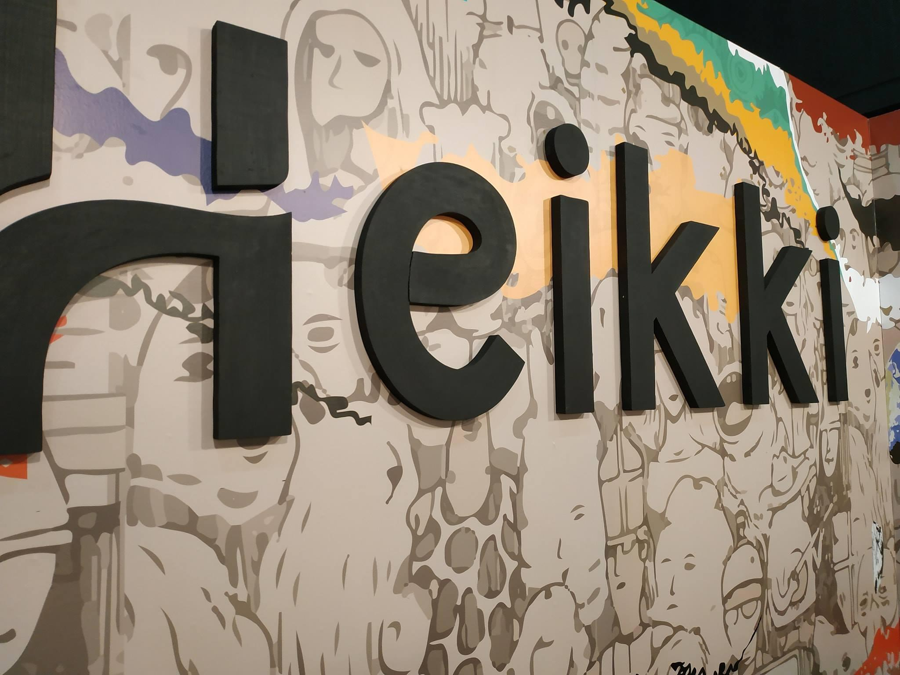

Tanto al Gremio Gráfico como al Consumidor Final
Consultanos por letras y logotipos corpóreos a tu medida, te enviamos el presupuesto sin cargo.
Si trabajás en el gremio gráfico y necesitás un corte en polyfan, podés enviarnos el diseño vectorizado y te estaremos entregando el pedido en 72 hs hábiles.
Realizamos logos, isologos, logotipos, iconos, dibujos, y toda clase de trabajos en 2D. Trabajamos a partir de archivos de vectores. También contamos con un servicio de vectorizado para clientes que no cuenten con el archivo para realizar el trabajo.
El tiempo de demora es de 72 horas hábiles, puede ser un poco más en un caso donde el pedido sea muy grande, consultá con tiempo, comunicate con nosotros antes de enviar los archivos.
Somos fabricantes de elementos personalizados para cada cliente, a su medida y gusto, construidos con material resistente. Controlamos el producto antes de entregarlo y en el momento de la entrega junto al cliente. Cualquier rotura supone un uso indebido del elemento, por esta razón no aceptamos devoluciones.
Trabajamos a partir de una seña mayor o igual al 50% del monto total del trabajo. El saldo restante, lo abonás una vez entregado el mismo. Los pagos pueden realizarse en efectivo, por transferencia bancaria o por Mercadopago.
Realizamos envíos a través de Mercadoenvíos (Mercadolibre). Tendrás que hacer la compra en una de las publicaciones de Mercadolibre, seleccionando la opción de envío a domicilio o a sucursal. Ahí te va a mostrar el costo del envío según la dirección que hayas ingresado en tu cuenta. Luego de hacer la compra, producimos tu pedido y lo despachamos. Te brindaremos el código de seguimiento para que puedas seguir la localización de tu pedido.
E-mail: info@fabricadecorporeos.com
Teléfono del taller: 1154647480
Ubicacion: San Andrés, Partido de General San Martín, Buenos Aires